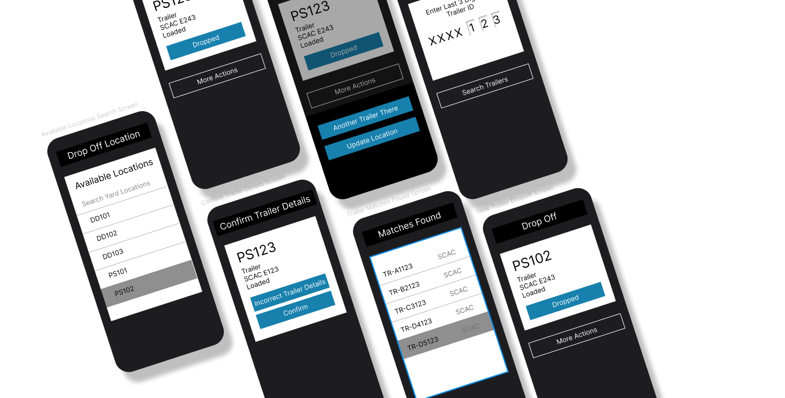

Hero

What Is It?
An internal workflow process improvement that allows yard drivers resolve an incorrect yard state without abandoning their active task.
Role
UX Designer
Scope
Research, workflow design, interaction design, prototyping
Tools
Figma